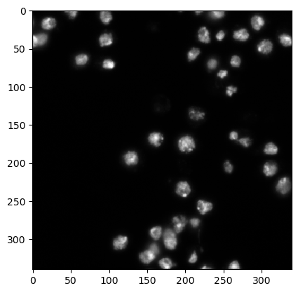
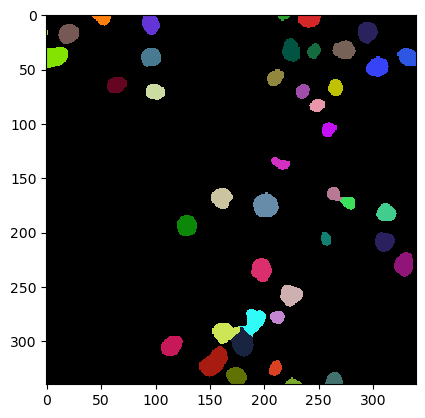

Quantitative image analysis using SimpleITK
Contents
6.4. Quantitative image analysis using SimpleITK#
We can also use SimpleITK for extracting features from label images. For convenience reasons we use the napari-simpleitk-image-processing library.
import numpy as np
import pandas as pd
from skimage.io import imread
from pyclesperanto_prototype import imshow
from napari_segment_blobs_and_things_with_membranes import voronoi_otsu_labeling
from napari_simpleitk_image_processing import label_statistics
As an example image we will use an extracgt from the BBBC007 dataset image set version 1 (Jones et al., Proc. ICCV Workshop on Computer Vision for Biomedical Image Applications, 2005), available from the Broad Bioimage Benchmark Collection [Ljosa et al., Nature Methods, 2012].
blobs = imread('../../data/BBBC007_batch/17P1_POS0013_D_1UL.tif')
imshow(blobs)

6.4.1. Starting point: a segmented label image#
labels = voronoi_otsu_labeling(blobs, spot_sigma=3.5)
imshow(labels, labels=True)

6.4.2. Label statistics#
There is a function label_statistics that allows you to specify what you want to measure. Within the brackets behind, hit Shift+Tab to see what other options are available.
statistics = label_statistics(blobs, labels, size=True, shape=True, intensity=True)
df = pd.DataFrame(statistics)
df
| label | maximum | mean | median | minimum | sigma | sum | variance | elongation | feret_diameter | flatness | roundness | equivalent_ellipsoid_diameter_0 | equivalent_ellipsoid_diameter_1 | equivalent_spherical_perimeter | equivalent_spherical_radius | number_of_pixels | number_of_pixels_on_border | |
|---|---|---|---|---|---|---|---|---|---|---|---|---|---|---|---|---|---|---|
| 0 | 1 | 189.0 | 95.594203 | 95.753906 | 35.0 | 38.840425 | 13192.0 | 1508.578652 | 1.797964 | 18.439089 | 1.797964 | 0.0 | 9.885624 | 17.773998 | 41.643236 | 6.627727 | 138 | 19 |
| 1 | 2 | 96.0 | 79.125000 | 80.871094 | 61.0 | 10.881669 | 633.0 | 118.410714 | 2.529822 | 4.000000 | 2.529822 | 0.0 | 2.006573 | 5.076274 | 10.026513 | 1.595769 | 8 | 5 |
| 2 | 3 | 138.0 | 83.482759 | 85.832031 | 35.0 | 28.606981 | 4842.0 | 818.359347 | 2.138700 | 12.041595 | 2.138700 | 0.0 | 5.876166 | 12.567359 | 26.997213 | 4.296740 | 58 | 13 |
| 3 | 4 | 164.0 | 93.620536 | 91.785156 | 35.0 | 33.346042 | 20971.0 | 1111.958500 | 1.654121 | 22.135944 | 1.654121 | 0.0 | 13.130927 | 21.720147 | 53.055320 | 8.444016 | 224 | 21 |
| 4 | 5 | 165.0 | 89.698795 | 90.792969 | 32.0 | 27.717207 | 22335.0 | 768.243587 | 1.232971 | 19.723083 | 1.232971 | 0.0 | 16.035346 | 19.771114 | 55.937700 | 8.902761 | 249 | 9 |
| 5 | 6 | 198.0 | 98.710801 | 94.761719 | 33.0 | 39.441423 | 28330.0 | 1555.625862 | 1.192244 | 20.615528 | 1.192244 | 0.0 | 17.507068 | 20.872698 | 60.054545 | 9.557978 | 287 | 0 |
| 6 | 7 | 83.0 | 63.454545 | 63.011719 | 49.0 | 11.201461 | 698.0 | 125.472727 | 3.675703 | 6.000000 | 3.675703 | 0.0 | 1.952006 | 7.174995 | 11.757129 | 1.871205 | 11 | 7 |
| 7 | 8 | 208.0 | 99.050179 | 94.761719 | 32.0 | 40.663972 | 27635.0 | 1653.558624 | 1.129494 | 19.723083 | 1.129494 | 0.0 | 17.734351 | 20.030834 | 59.211632 | 9.423824 | 279 | 0 |
| 8 | 9 | 192.0 | 101.791209 | 103.691406 | 31.0 | 36.220886 | 27789.0 | 1311.952569 | 1.280479 | 21.023796 | 1.280479 | 0.0 | 16.475937 | 21.097095 | 58.571488 | 9.321942 | 273 | 0 |
| 9 | 10 | 169.0 | 89.158088 | 86.824219 | 33.0 | 28.747161 | 24251.0 | 826.399270 | 1.367414 | 21.587033 | 1.367414 | 0.0 | 15.914372 | 21.761535 | 58.464116 | 9.304853 | 272 | 0 |
| 10 | 11 | 176.0 | 98.293233 | 98.730469 | 33.0 | 40.172315 | 13073.0 | 1613.814878 | 1.228297 | 13.601471 | 1.228297 | 0.0 | 11.741649 | 14.422238 | 40.881870 | 6.506552 | 133 | 0 |
| 11 | 12 | 233.0 | 100.278443 | 99.722656 | 33.0 | 41.033463 | 33493.0 | 1683.745059 | 1.259146 | 25.612497 | 1.259146 | 0.0 | 18.377658 | 23.140164 | 64.785552 | 10.310941 | 334 | 20 |
| 12 | 13 | 229.0 | 105.978992 | 107.660156 | 31.0 | 43.715270 | 25223.0 | 1911.024873 | 1.230081 | 20.000000 | 1.230081 | 0.0 | 15.695554 | 19.306806 | 54.688172 | 8.703893 | 238 | 13 |
| 13 | 14 | 194.0 | 97.106227 | 95.753906 | 33.0 | 34.742430 | 26510.0 | 1207.036468 | 1.088491 | 19.209373 | 1.088491 | 0.0 | 17.869976 | 19.451307 | 58.571488 | 9.321942 | 273 | 0 |
| 14 | 15 | 208.0 | 88.329897 | 85.832031 | 30.0 | 30.682935 | 25704.0 | 941.442517 | 1.155152 | 20.615528 | 1.155152 | 0.0 | 17.909437 | 20.688127 | 60.471595 | 9.624353 | 291 | 0 |
| 15 | 16 | 182.0 | 88.945652 | 82.855469 | 35.0 | 30.638332 | 16366.0 | 938.707413 | 1.330357 | 17.204651 | 1.330357 | 0.0 | 13.270272 | 17.654203 | 48.085468 | 7.653040 | 184 | 0 |
| 16 | 17 | 162.0 | 94.177778 | 96.746094 | 34.0 | 31.399563 | 21190.0 | 985.932540 | 1.248545 | 18.384776 | 1.248545 | 0.0 | 15.147614 | 18.912477 | 53.173616 | 8.462844 | 225 | 0 |
| 17 | 18 | 158.0 | 89.012121 | 85.832031 | 33.0 | 27.362737 | 14687.0 | 748.719364 | 1.067778 | 14.560220 | 1.067778 | 0.0 | 14.026736 | 14.977435 | 45.535164 | 7.247146 | 165 | 0 |
| 18 | 19 | 111.0 | 76.539568 | 74.917969 | 45.0 | 18.445873 | 10639.0 | 340.250235 | 1.176259 | 13.928388 | 1.176259 | 0.0 | 12.266227 | 14.428259 | 41.793845 | 6.651697 | 139 | 0 |
| 19 | 20 | 255.0 | 119.223301 | 113.613281 | 23.0 | 63.206889 | 24560.0 | 3995.110869 | 1.196578 | 17.088007 | 1.196578 | 0.0 | 14.805332 | 17.715736 | 50.878997 | 8.097644 | 206 | 0 |
| 20 | 21 | 185.0 | 97.503817 | 99.722656 | 29.0 | 42.506900 | 12773.0 | 1806.836524 | 1.188141 | 13.892444 | 1.188141 | 0.0 | 11.848319 | 14.077472 | 40.573323 | 6.457445 | 131 | 0 |
| 21 | 22 | 162.0 | 90.449275 | 90.792969 | 29.0 | 32.365628 | 12482.0 | 1047.533905 | 1.189990 | 14.212670 | 1.189990 | 0.0 | 12.151303 | 14.459935 | 41.643236 | 6.627727 | 138 | 0 |
| 22 | 23 | 107.0 | 61.803030 | 59.042969 | 37.0 | 14.898352 | 8158.0 | 221.960907 | 1.940889 | 17.088007 | 1.940889 | 0.0 | 9.305541 | 18.061026 | 40.727889 | 6.482045 | 132 | 0 |
| 23 | 24 | 166.0 | 88.323308 | 85.832031 | 31.0 | 37.578715 | 11747.0 | 1412.159831 | 1.266131 | 14.866069 | 1.266131 | 0.0 | 11.564891 | 14.642667 | 40.881870 | 6.506552 | 133 | 0 |
| 24 | 25 | 242.0 | 104.000000 | 97.738281 | 33.0 | 45.917939 | 29224.0 | 2108.457143 | 1.035791 | 19.646883 | 1.035791 | 0.0 | 18.585407 | 19.250605 | 59.423481 | 9.457541 | 281 | 0 |
| 25 | 26 | 126.0 | 76.512195 | 76.902344 | 41.0 | 20.510440 | 9411.0 | 420.678129 | 1.335736 | 14.317821 | 1.335736 | 0.0 | 10.827976 | 14.463318 | 39.314928 | 6.257165 | 123 | 0 |
| 26 | 27 | 198.0 | 103.388626 | 103.691406 | 33.0 | 37.321683 | 43630.0 | 1392.907994 | 1.025295 | 23.537205 | 1.025295 | 0.0 | 22.892162 | 23.471225 | 72.821758 | 11.589943 | 422 | 0 |
| 27 | 28 | 170.0 | 98.029536 | 98.730469 | 31.0 | 32.389630 | 23233.0 | 1049.088107 | 1.194861 | 19.104973 | 1.194861 | 0.0 | 15.891704 | 18.988383 | 54.573160 | 8.685588 | 237 | 0 |
| 28 | 29 | 216.0 | 99.525424 | 95.753906 | 34.0 | 38.262945 | 29360.0 | 1464.052923 | 1.017426 | 19.416488 | 1.017426 | 0.0 | 19.213862 | 19.548681 | 60.885789 | 9.690274 | 295 | 0 |
| 29 | 30 | 99.0 | 68.271739 | 69.957031 | 45.0 | 11.918315 | 6281.0 | 142.046226 | 1.459820 | 12.649111 | 1.459820 | 0.0 | 8.957757 | 13.076715 | 34.001560 | 5.411516 | 92 | 0 |
| 30 | 31 | 177.0 | 90.753676 | 90.792969 | 36.0 | 31.606582 | 24685.0 | 998.976001 | 1.028763 | 18.681542 | 1.028763 | 0.0 | 18.347713 | 18.875440 | 58.464116 | 9.304853 | 272 | 0 |
| 31 | 32 | 168.0 | 80.546980 | 74.917969 | 34.0 | 27.017132 | 24003.0 | 729.925395 | 1.333807 | 22.360680 | 1.333807 | 0.0 | 16.866176 | 22.496231 | 61.194595 | 9.739422 | 298 | 0 |
| 32 | 33 | 204.0 | 90.617021 | 86.824219 | 29.0 | 30.960820 | 29813.0 | 958.572392 | 1.118232 | 21.587033 | 1.118232 | 0.0 | 19.354730 | 21.643072 | 64.298802 | 10.233472 | 329 | 0 |
| 33 | 34 | 196.0 | 99.518272 | 95.753906 | 31.0 | 37.824029 | 29955.0 | 1430.657165 | 1.091743 | 20.615528 | 1.091743 | 0.0 | 18.736049 | 20.454958 | 61.501850 | 9.788323 | 301 | 0 |
| 34 | 35 | 124.0 | 78.697674 | 75.910156 | 37.0 | 23.695531 | 10152.0 | 561.478198 | 1.107833 | 13.152946 | 1.107833 | 0.0 | 12.176229 | 13.489225 | 40.262412 | 6.407962 | 129 | 0 |
| 35 | 36 | 182.0 | 76.945289 | 68.964844 | 34.0 | 30.643854 | 25315.0 | 939.045778 | 1.427831 | 26.400758 | 1.427831 | 0.0 | 17.128313 | 24.456337 | 64.298802 | 10.233472 | 329 | 0 |
| 36 | 37 | 168.0 | 84.812883 | 84.839844 | 29.0 | 31.099621 | 27649.0 | 967.186418 | 1.323957 | 24.515301 | 1.323957 | 0.0 | 17.706266 | 23.442328 | 64.004975 | 10.186708 | 326 | 0 |
| 37 | 38 | 177.0 | 100.131206 | 101.707031 | 29.0 | 36.379482 | 28237.0 | 1323.466710 | 1.302883 | 21.400935 | 1.302883 | 0.0 | 16.600718 | 21.628797 | 59.529123 | 9.474354 | 282 | 0 |
| 38 | 39 | 164.0 | 102.875676 | 105.675781 | 33.0 | 33.046337 | 38064.0 | 1092.060382 | 1.282351 | 26.305893 | 1.282351 | 0.0 | 19.166928 | 24.578724 | 68.187661 | 10.852403 | 370 | 0 |
| 39 | 40 | 233.0 | 94.528421 | 90.792969 | 33.0 | 38.361603 | 44901.0 | 1471.612587 | 1.657685 | 30.886890 | 1.657685 | 0.0 | 19.100769 | 31.663059 | 77.259472 | 12.296227 | 475 | 0 |
| 40 | 41 | 150.0 | 91.892308 | 95.753906 | 33.0 | 32.923978 | 11946.0 | 1083.988312 | 1.379006 | 14.764823 | 1.379006 | 0.0 | 10.955790 | 15.108098 | 40.418166 | 6.432751 | 130 | 0 |
| 41 | 42 | 236.0 | 101.597610 | 95.753906 | 30.0 | 43.330837 | 25501.0 | 1877.561434 | 1.263470 | 19.924859 | 1.263470 | 0.0 | 15.904114 | 20.094369 | 56.161900 | 8.938444 | 251 | 12 |
| 42 | 43 | 222.0 | 114.104895 | 110.636719 | 34.0 | 48.297889 | 16317.0 | 2332.686103 | 1.429075 | 16.278821 | 1.429075 | 0.0 | 11.287443 | 16.130602 | 42.390931 | 6.746726 | 143 | 17 |
| 43 | 44 | 162.0 | 87.120690 | 78.886719 | 34.0 | 38.912893 | 5053.0 | 1514.213249 | 2.408771 | 14.000000 | 2.408771 | 0.0 | 5.536959 | 13.337266 | 26.997213 | 4.296740 | 58 | 15 |
These are all columns that are available:
print(statistics.keys())
Index(['label', 'maximum', 'mean', 'median', 'minimum', 'sigma', 'sum',
'variance', 'elongation', 'feret_diameter', 'flatness', 'roundness',
'equivalent_ellipsoid_diameter_0', 'equivalent_ellipsoid_diameter_1',
'equivalent_spherical_perimeter', 'equivalent_spherical_radius',
'number_of_pixels', 'number_of_pixels_on_border'],
dtype='object')
To get an overview about the measurements, we can use the describe method.
df.describe().T
| count | mean | std | min | 25% | 50% | 75% | max | |
|---|---|---|---|---|---|---|---|---|
| label | 44.0 | 22.500000 | 12.845233 | 1.000000 | 11.750000 | 22.500000 | 33.250000 | 44.000000 |
| maximum | 44.0 | 176.000000 | 40.704837 | 83.000000 | 162.000000 | 176.500000 | 199.500000 | 255.000000 |
| mean | 44.0 | 91.670929 | 11.991820 | 61.803030 | 86.543738 | 92.756422 | 99.520060 | 119.223301 |
| median | 44.0 | 90.116477 | 12.275056 | 59.042969 | 84.343750 | 91.289062 | 97.986328 | 113.613281 |
| minimum | 44.0 | 34.204545 | 6.121178 | 23.000000 | 31.000000 | 33.000000 | 35.000000 | 61.000000 |
| sigma | 44.0 | 33.064504 | 10.124795 | 10.881669 | 28.712116 | 32.985157 | 38.858542 | 63.206889 |
| sum | 44.0 | 20682.068182 | 10589.601489 | 633.000000 | 12348.000000 | 23618.000000 | 27684.000000 | 44901.000000 |
| variance | 44.0 | 1193.443088 | 682.363358 | 118.410714 | 824.389289 | 1088.024347 | 1509.987301 | 3995.110869 |
| elongation | 44.0 | 1.404297 | 0.488280 | 1.017426 | 1.170982 | 1.261308 | 1.391212 | 3.675703 |
| feret_diameter | 44.0 | 18.297767 | 5.102293 | 4.000000 | 14.499620 | 19.157173 | 21.118081 | 30.886890 |
| flatness | 44.0 | 1.404297 | 0.488280 | 1.017426 | 1.170982 | 1.261308 | 1.391212 | 3.675703 |
| roundness | 44.0 | 0.000000 | 0.000000 | 0.000000 | 0.000000 | 0.000000 | 0.000000 | 0.000000 |
| equivalent_ellipsoid_diameter_0 | 44.0 | 14.266726 | 4.654120 | 1.952006 | 11.697460 | 15.793629 | 17.768257 | 22.892162 |
| equivalent_ellipsoid_diameter_1 | 44.0 | 18.317758 | 4.723680 | 5.076274 | 14.597830 | 19.119494 | 21.230020 | 31.663059 |
| equivalent_spherical_perimeter | 44.0 | 50.554583 | 14.457400 | 10.026513 | 40.881870 | 54.630666 | 60.158808 | 77.259472 |
| equivalent_spherical_radius | 44.0 | 8.046012 | 2.300967 | 1.595769 | 6.506552 | 8.694741 | 9.574572 | 12.296227 |
| number_of_pixels | 44.0 | 219.636364 | 104.901968 | 8.000000 | 133.000000 | 237.500000 | 288.000000 | 475.000000 |
| number_of_pixels_on_border | 44.0 | 3.431818 | 6.532202 | 0.000000 | 0.000000 | 0.000000 | 1.250000 | 21.000000 |